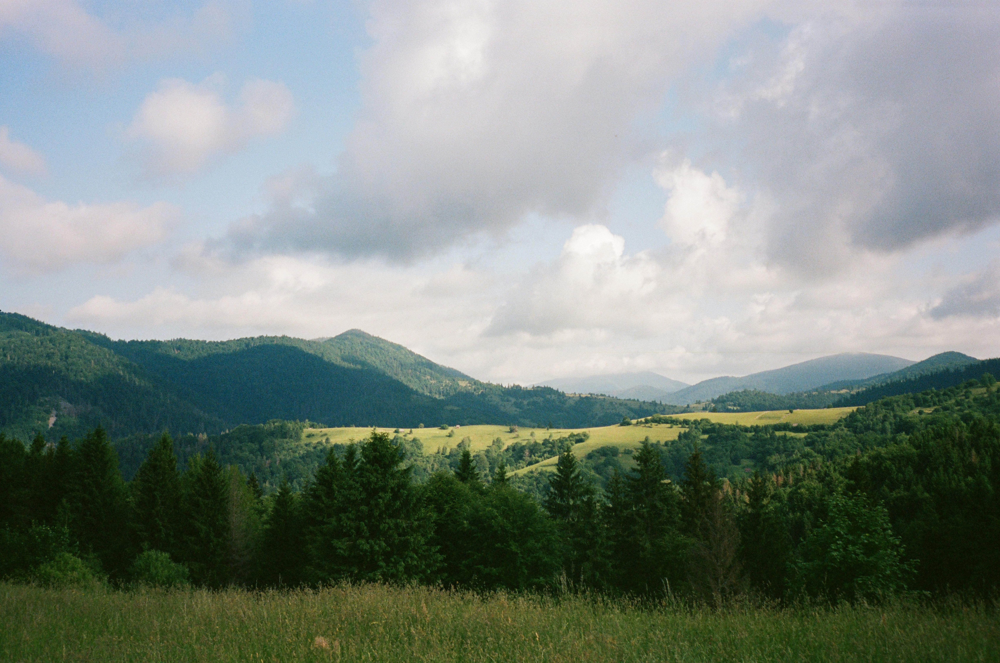
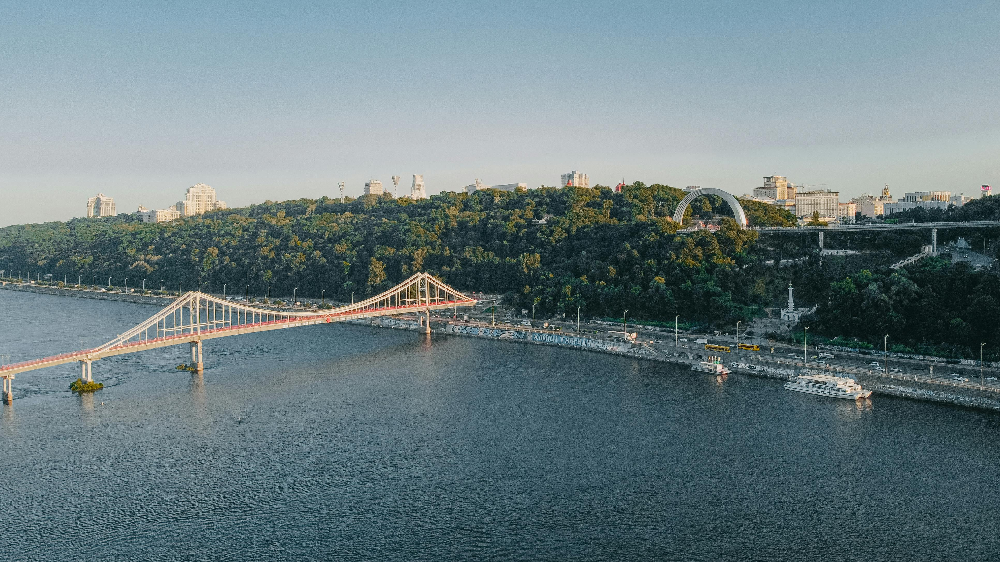

Історія України
Україна має давню та величну історію. На її землях існувала Київська Русь, яка стала важливим центром розвитку слов’янської цивілізації.
У різні періоди український народ боровся за свою свободу, мову та культуру.
Особливе місце в історії займають козацтво, визвольні змагання та відновлення незалежності.
Культура і традиції
Українська культура відома народними піснями, вишиванками, танцями та звичаями.
Символами культури є вишиванка, калина, писанка та українська пісня.
Найвідоміші елементи культури:
- народна музика
вишивка
- традиційна кухня
- свята та обряди
Природа України

Україна має різноманітну природу: степи, ліси, річки, гори та морське узбережжя.
Особливо відомі Карпати, Дніпро і Чорне море.
Карпати
Мальовничі гори, популярні серед туристів у всі пори року.
Дніпро

Одна з найбільших річок Європи, що має велике значення для країни.
Міста України
Україна має багато красивих і важливих міст.
-
Київ
- Львів
- Одеса
- Харків
- Дніпро
Великі міста
Київ — столиця України.
Львів — місто кави, архітектури та традицій.
Одеса — місто моря та гумору.
Маленькі міста
Хуст — столиця України.
Чоп — місто кави, архітектури та традицій.
Перечин — місто моря та гумору.
Майбутнє України
Україна розвивається, захищає свою незалежність і впевнено дивиться в майбутнє.
Сила України — в людях, культурі, свободі та єдності.